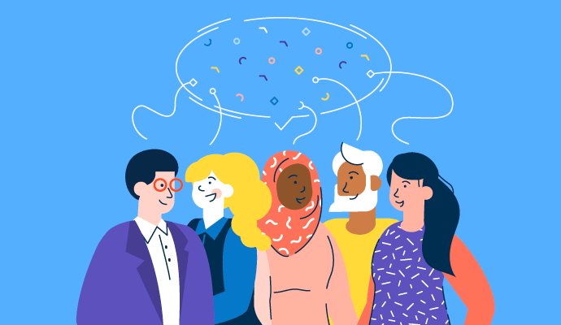

UI/UX Designer & Product Designer
I'm Yilin, a Cornell-based designer and developer who builds digital products that are thoughtful, warm, and grounded in real user needs.
A shopping experience helping eco-conscious college students discover local, sustainable products — without sacrificing convenience or price transparency.

Helping international students find peers who share their cultural traditions — to plan small celebrations and stay connected to home while studying abroad.
"Good design is felt before it's understood."
I'm a UI/UX designer and product designer studying at Cornell University. I'm passionate about creating digital experiences that are not only beautiful but genuinely useful to the people who use them.
My work sits at the intersection of design thinking and technical implementation. I love taking a product from research through to a working prototype. I care about accessibility, warmth, and craft in everything I build.
Outside of design, I enjoy exploring how culture and technology intersect, which inspired the Cultural Buddy Finder project.